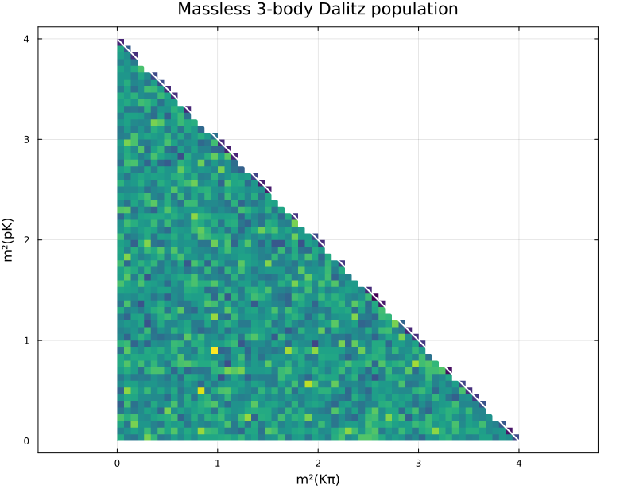
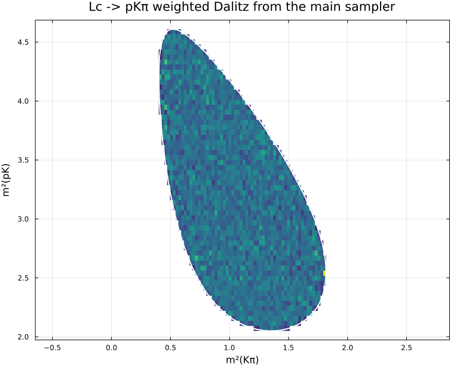

Three-body generation and Dalitz processing
This tutorial shows a simple three-body workflow:
- build the total-state four-vector,
- generate events with
RemboOnDiet.jl, - move the samples into a
DataFrame, - plot Dalitz histograms with
Plots.jl.
using Random
using Statistics
using DataFrames
ENV["GKSwstype"] = "100"
using Plots
using RemboOnDiet
using FourVectors
gr()
default(size = (780, 620), legend = false)Utility helpers
We will use the invariant-mass pairs (s23, s12) as Dalitz coordinates.
function events_table(points)
return DataFrame(
s23 = [invariant_masses(point.momenta).s23 for point in points],
s31 = [invariant_masses(point.momenta).s31 for point in points],
s12 = [invariant_masses(point.momenta).s12 for point in points],
jacobian = [phase_space_weight(point) for point in points],
)
end
dalitz_limits_s23(masses, m0) = ((masses[2] + masses[3])^2, (m0 - masses[1])^2)
dalitz_limits_s12(masses, m0) = ((masses[1] + masses[2])^2, (m0 - masses[3])^2)
function s12_limits_given_s23(s23, masses, m0)
m1, m2, m3 = masses
e1 = (m0^2 - s23 - m1^2) / (2 * sqrt(s23))
e2 = (s23 + m2^2 - m3^2) / (2 * sqrt(s23))
p1 = sqrt(max(0.0, e1^2 - m1^2))
p2 = sqrt(max(0.0, e2^2 - m2^2))
center = m1^2 + m2^2 + 2 * e1 * e2
span = 2 * p1 * p2
return center - span, center + span
end
function kibble_value(s23, s12, masses, m0)
s31 = m0^2 + sum(abs2, masses) - s23 - s12
msq = (masses .^ 2)..., m0^2
return kallen(
kallen(msq[4], msq[1], s23),
kallen(msq[4], msq[2], s31),
kallen(msq[4], msq[3], s12),
)
end
function dalitz_heatmap(df, masses, m0; bins = 60, weights = nothing, title = "")
xedges = collect(range(dalitz_limits_s23(masses, m0)...; length = bins + 1))
yedges = collect(range(dalitz_limits_s12(masses, m0)...; length = bins + 1))
xcenters = @. (xedges[1:end-1] + xedges[2:end]) / 2
ycenters = @. (yedges[1:end-1] + yedges[2:end]) / 2
counts = zeros(Float64, bins, bins)
if isnothing(weights)
for (x, y) in zip(df.s23, df.s12)
ix = searchsortedlast(xedges, x)
iy = searchsortedlast(yedges, y)
if 1 <= ix <= bins && 1 <= iy <= bins
counts[iy, ix] += 1
end
end
else
for (x, y, w) in zip(df.s23, df.s12, weights)
ix = searchsortedlast(xedges, x)
iy = searchsortedlast(yedges, y)
if 1 <= ix <= bins && 1 <= iy <= bins
counts[iy, ix] += w
end
end
end
z = Matrix{Float64}(undef, bins, bins)
for iy in 1:bins, ix in 1:bins
x = xcenters[ix]
y = ycenters[iy]
z[iy, ix] = kibble_value(x, y, masses, m0) <= 0 ? counts[iy, ix] : NaN
end
border_x = collect(range(dalitz_limits_s23(masses, m0)...; length = 500))
border_lo = similar(border_x)
border_hi = similar(border_x)
for i in eachindex(border_x)
border_lo[i], border_hi[i] = s12_limits_given_s23(border_x[i], masses, m0)
end
plt = heatmap(
xcenters,
ycenters,
z;
xlabel = "m²(Kπ)",
ylabel = "m²(pK)",
title = title,
colorbar_title = isnothing(weights) ? "counts" : "weighted counts",
aspect_ratio = :equal,
c = :viridis,
framestyle = :box,
)
plot!(plt, border_x, border_lo; color = :white, linewidth = 2)
plot!(plt, border_x, border_hi; color = :white, linewidth = 2)
return plt
enddalitz_heatmap (generic function with 1 method)Massless three-body phase space
In the massless case, the main sampler gives a constant event Jacobian, so the unweighted Dalitz histogram is already flat.
rng = MersenneTwister(7)
sqrt_s = 2.0
massless_masses = [0.0, 0.0, 0.0]
massless_generator = PhaseSpaceGenerator(massless_masses, sqrt_s)
massless_points = [rand(rng, massless_generator) for _ in 1:80_000]
massless_df = events_table(massless_points)
first(massless_df, 5)
allunique(round.(massless_df.jacobian; digits = 12))
massless_plot = dalitz_heatmap(
massless_df,
massless_masses,
sqrt_s;
bins = 60,
title = "Massless 3-body Dalitz population",
)
massless_plot
Massive example: \Lambda_c^+ \to p K^- \pi^+
For non-zero masses, the main sampler produces weighted events. The physically flat phase-space density is recovered by filling the Dalitz histogram with weights = jacobian.
lc_masses = (
m0 = 2.28646,
p = 0.93827208816,
K = 0.493677,
π = 0.13957039,
)
massive_masses = [lc_masses.p, lc_masses.K, lc_masses.π]
massive_generator = PhaseSpaceGenerator(massive_masses, lc_masses.m0)
massive_points = [rand(rng, massive_generator) for _ in 1:80_000]
massive_df = events_table(massive_points)
first(massive_df, 5)
std(massive_df.jacobian) / mean(massive_df.jacobian)
massive_plot = dalitz_heatmap(
massive_df,
massive_masses,
lc_masses.m0;
bins = 60,
weights = massive_df.jacobian,
title = "Lc -> pKπ weighted Dalitz from the main sampler",
)
massive_plot
Building the total four-momentum explicitly
The high-level generate_point(rng, masses, sqrt_s) helper works in the center-of-mass frame. If you want a moving parent, construct the total-state FourVector and use generate_momenta.
beam_total = FourVector(0.35, -0.2, 1.1; E = sqrt(lc_masses.m0^2 + 0.35^2 + 0.2^2 + 1.1^2))
boosted_generator = PhaseSpaceGenerator(massive_masses, beam_total)
boosted_point = rand(rng, boosted_generator)
total_momentum(boosted_point.momenta)4-element FourVectors.FourVector{Float64} with indices SOneTo(4):
0.3500000000000001
-0.20000000000000007
1.1
2.5691242343646987This page was generated using Literate.jl.